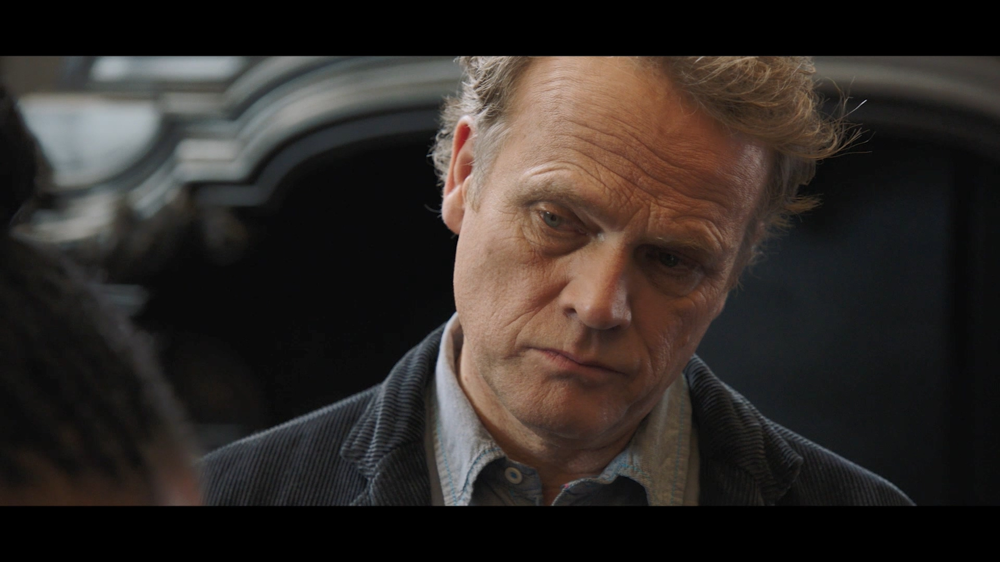
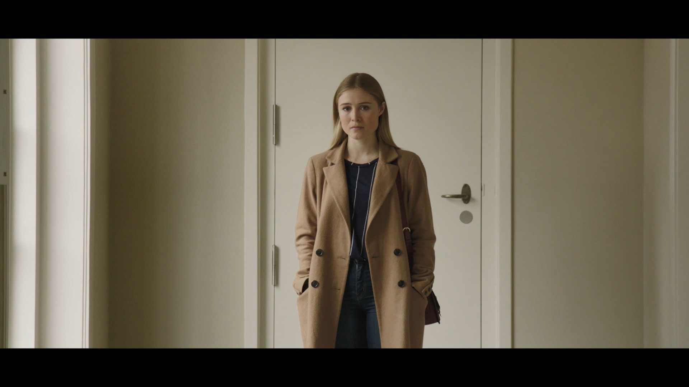
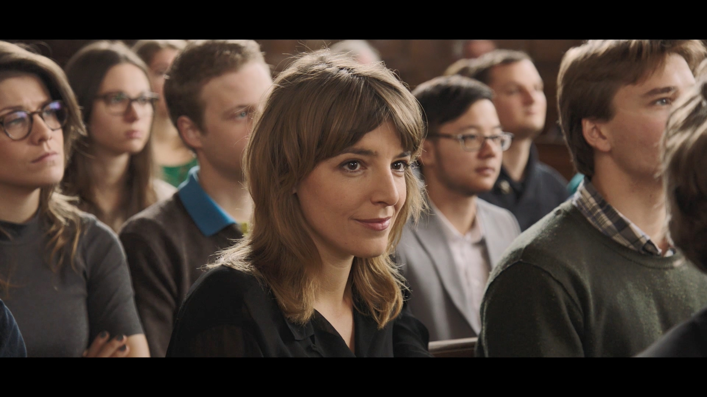
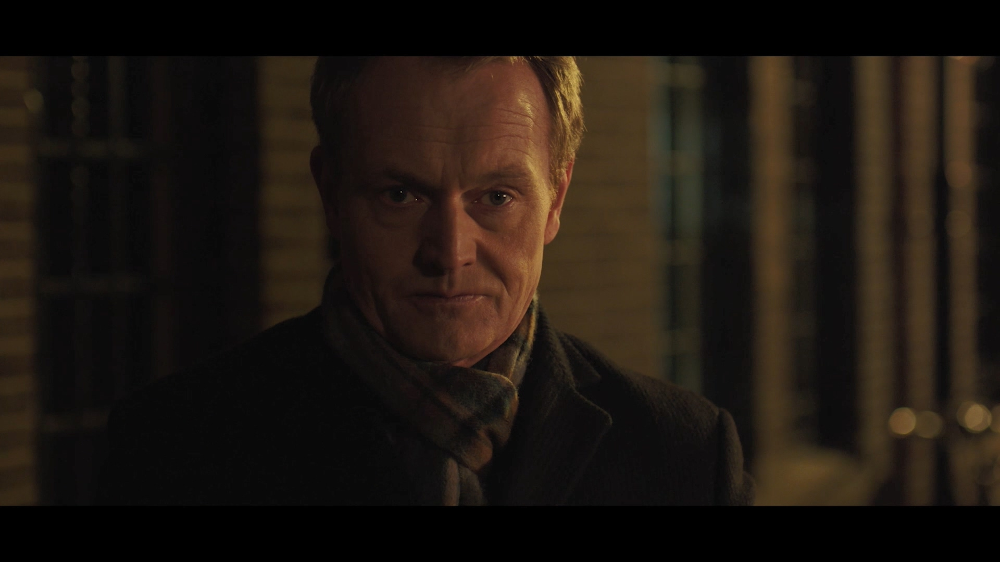

影片介紹：科學家之路
沒有想到有一天我會寫影劇介紹文，這部有意思的影片是找尋資料時的意外發現。荷蘭萊登大學(Leiden University)在2016年4月於校內首映並在youtube公開自製的微電影「科學家之路」(On Being a Scientist)。第一次知道這部影片的朋友，可以先花一小時來看看，或者先往下看劇情簡介與角色介紹：
這部微電影由萊登大學的MOOCs製作與發佈，演員都以英語發音，英聽好的朋友都能了解劇情。不過每一幕之間切換與跳躍手法很像好萊塢的懸疑片，雖然重要角色只有四位，要在前十五分鐘內認識他們，加上理解彼此的關係會有些吃力，可能無法抓住這部影片的主題。以下簡介四位角色的設定與關係：
Nicholas: 本劇主角，一位曾獲得學術榮耀的科學家，如同所有處於學術生涯巔峰的科學家，整天忙著做研究發論文，還有訓練新一代科學家。故事從他接受某所知名大學聘任開始。

Sophie: Nicholas的女兒。在Nicholas任教的大學從事科學歷史研究，母親過世後與Nicholas相依為命。父女情感深厚，但是會因為彼此的學術價值觀落差而爭吵。與另一位重要角色Rebecca是好朋友。

Rebecca: Nicholas在新學校收的博士生，被Nicholas認為是有潛力的科學界明日之星。Rebecca對個人的科學生涯有很強的企圖，過強的企圖讓她捲入Nicholas與另一位重要角色Pierre的衝突，也因此犯下嚴重的研究倫理過失。

Pierre: Nicholas的前任學生，Nicholas的學術榮耀來自與他合作的成果，也因此埋下兩人衝突的原因。觀眾在理解兩人衝突原因的過程中，會發現Nicholas與Pierre不為人知的一面。

全劇在萊登大學校園中取景，相信在萊登大學求學工作的朋友很有即視感。不過從背景 設定來看，可以當成世界上任何一所大學裡發生的故事。基於不破壞觀影樂趣，我在不洩露劇情的前提下，聊聊吸引我的特色：這部影片的主題與演繹手法。
劇名加上主角的設定，我一開始以為這是講研究倫理的劇情片。整部影片看過後我發現研究倫理只是一部分，這部還探討導致劇中人物犯下研究倫理的人性因素。而且到了結尾時，會發現Nicholas與Pierre的衝突原因，並不是那一方觸犯研究倫理的問題，而是在外人看不見的實驗室裡，科學家也與一般人相同，會因眼前利益而做出短線行為。這種行為只做一兩次，其實不會違反普羅大眾的道德觀念，更談不上研究倫理的問題。但是像Nicholas一樣領導實驗室的科學家，自己不以為意還視為理所當然，並且影響後輩的價值觀。日積月累就會演變成實際的研究倫理事件，就像劇中Rebecca的情節所展現的。為何這種短線行為會出現在一位卓越的科學家身上，我認為才是這部片要探討的主題。現在這類短線行為已有正式學名：待澄清的研究操作(Questionable Research Practices)。
主題的真意也讓我留意這部片的演繹手法，因為主題還是個很難明確討論的議題，所以劇情片比紀錄片或模擬劇更適合演繹。編劇與導演將主題的微言大意，透過角色之間的對手戲呈現。我認為中段Nicholas與Rebecca在實驗室裡對話的一幕，可以把前後劇情所有角色的行為動機折射出來。第二遍看到這幕，我終於明白是什麼原因造就了Nicholas的假道學與Rebecca的不擇手段。這個部分再講下去會劇透，等之後有機會再來分享了。